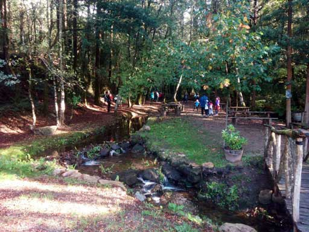
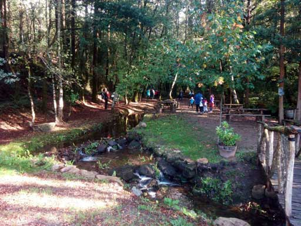

Ruta circular ao castro Lupario foi deseñada conxuntamente polos concellos de Brión e Rois. É posible iniciala desde a área de descanso de Angueira de Castro, desde a ponte Paradela ou desde calquera punto intermedio. Inclúe unha ruta base e 3 variantes cunhas lonxitudes que oscilan entre 3,8 e 4,5 km. Están sinalizados todos os cruzamentos e todas as bifurcacións.

Descrición da ruta

Desde a área de descanso de Angueira de Castro collemos o carreiro á beira do río Tinto, augas arriba cara ao Faramello, zona moi axeitada para días de sol e calor. Na ponte do pazo podemos proseguir pola beira do río ata enlazar a poucos metros co percorrido principal (atallo non recomendado para todas as persoas) ou desviarnos por un camiño máis ancho e máis alto desde o que se divisan vistas do pazo que son moi recomendables. Pasamos pola zona de repoboación de árbores autóctonas, actuación de gran valor ambiental, e polo “Xardín do Recordo”, espazo creado en memoria das vítimas do accidente do tren Alvia en Agrois no ano 2013. Ambos os dous espazos contribúen á mellora da contorna privilexiada do Pazo do Faramello. Despois collemos un camiño ancho á esquerda para chegar á ponte Paradela, construción medieval recentemente restaurada nunha zona con encanto moi axeitada para descansar.
Desde a ponte Paradela imos por un pequeno carreiro paralelo á estrada que desemboca no camiño do Castro. Ao pouco atopamos a bifurcación da subida ao Castro ou de regreso a Angueira. A subida é empinada pero curta. A roza integral do castro Lupario en 2018 permítenos percorrer todo o recinto e gozar de vistas panorámicas. É un castro non escavado, é dicir, non veremos estruturas completas desenterradas senón algunhas ruinas que sobresaen, sempre con musgo. Os muros norte e sur si están á vista e ben conservados. Baixamos polo mesmo camiño ata a bifurcación anterior onde seguiremos á dereita cara a Angueira de Castro. Tamén podemos regresar a esta aldea por Xinzo ou polo camiño inverso ao da ida, pola ponte Paradela. Seguindo a ruta base imos atopar 2 cruzamentos con 3 camiños opcionais.
Opción 1: Diríxese cara a área de descanso inicial, sen entrar na aldea, e non o recomendamos.
Opción 2: É un carreiro pegado a un muro que nos leva á parte alta de Angueira.
Opción 3: Se non collemos ningún dos dous anteriores e seguimos de fronte desde o muro, estamos ante o terceiro que vai ata un cruzamento de 5 camiños. Un deles vai ser o que nos leve á aldea, pasando preto do aparcadoiro. Calquera dos últimos son recomendables e todos están sinalizados. Angueira de Castro é unha aldea xeitosa e ben conservada. Atravesarémola para rematar a ruta dirixíndonos cara á área de descanso deste lugar.
 
